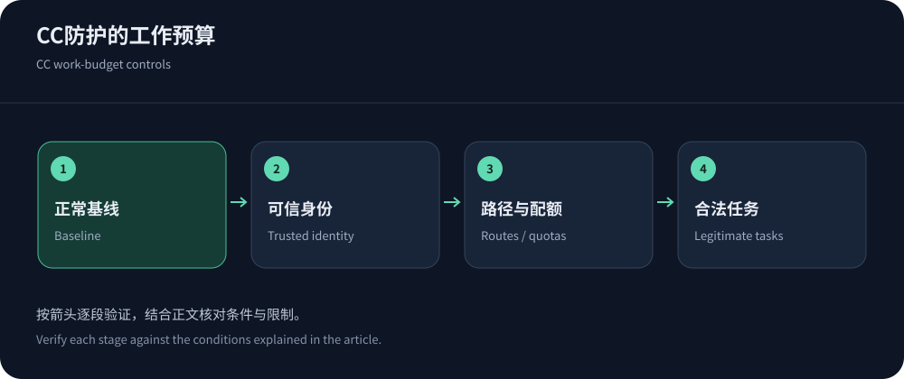
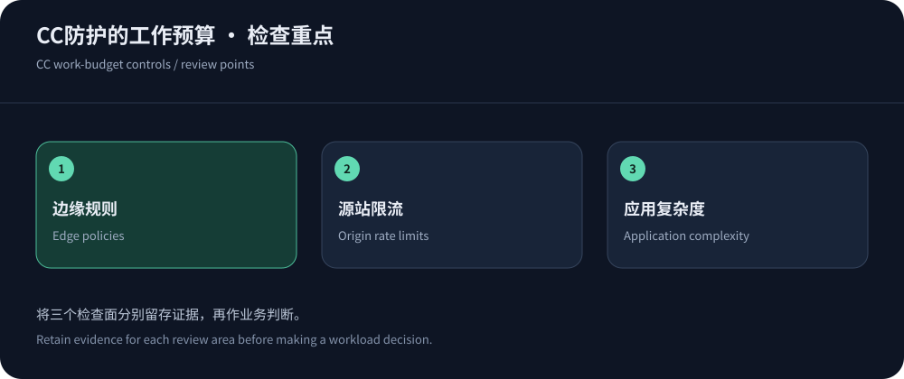

Protect work rather than request counts alone
“CC” commonly describes application-layer resource abuse, not one protocol or request pattern. Identify work exceeding the application budget: images and reports can have radically different costs. One global rate can both miss costly abuse and harm readers.
This article addresses lasting configuration; use CC incident response during outages. Information was checked on 14 October 2026. Judge protection by legitimate completion and controlled origin work.
Build a segmented baseline
Group route templates, methods, identities, status, cache and execution time. Separate campaigns, monitors, crawlers and partners. Traffic growth alone does not establish abuse; correlate resource pressure and task outcomes.
Keep distributions and resource budgets, redact sensitive logs and refresh baselines when applications or clients change.
Exclude known failures and abnormal retries from baselines. Retain time, campaign and client distributions so future policy changes remain explainable.


Identity counters require a trust boundary
Shared egress can aggregate legitimate users. Accounts or tokens offer finer control only when authenticated; arbitrary client values must not mint unlimited budgets. Anonymous traffic still needs aggregate limits.
Behind proxies, restore identity only through trusted ingress. Counting proxy IPs groups unrelated users, while trusting arbitrary forwarding headers permits spoofing. Validate the full proxy chain.
Choose client-compatible actions
Rate-rule documentation separates matching, counting and action. Browser challenges may be unsuitable for SDKs and callbacks; use authenticated quotas and protocol-compatible errors. Verify crawler identity.
Observe before narrow enforcement and track legitimate refusals. Scope temporary exceptions with owners and expiry.
Combine cache hygiene and application budgets
Apply RFC 9111, simplifying keys only after proving equivalence and never sharing private data. Verify both correctness and offload.
Bound query complexity, pagination, export concurrency and runtime. Queues need capacity and overload behavior. Edge protection does not replace indexes or database tuning.
Use NGINX as a second work constraint
The NGINX rate module exposes key/rate controls and observation options. Understand burst delay versus rejection; queued connections consume resources.
Validate real-IP handling and distinguish edge from origin refusals. Bound retries, preserve idempotency and retain tested rollback.
Place protected CDN and bot controls deliberately
For regional Web protection, evaluate CDN5 for rules, logs, protocols and false-positive support, while isolating origins. Advertised QPS is not complex-workload capacity.
Bot documentation describes capabilities beyond rate limits. Verify legitimate automation and client compatibility without inventing detection accuracy.


Maintain the policy as the application evolves
Review rules with releases, endpoints and retry changes. Sample legitimate failures by audience and track task success, queues and cost.
Maintain owners, reasons and removal conditions, exercising bounded authorized samples. See HTTP Flood/WAF analysis for deeper diagnosis. The goal is controlled work with usable service.
Record policy-retirement reasons and evidence to prevent accidental reactivation.